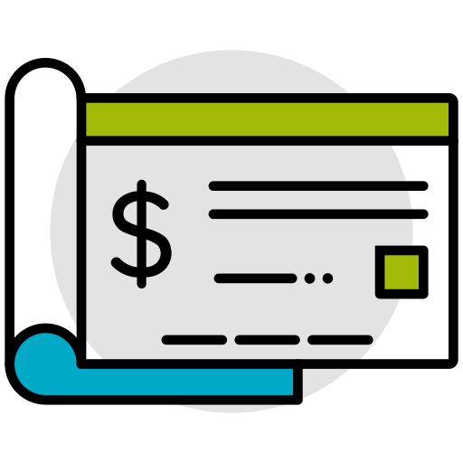
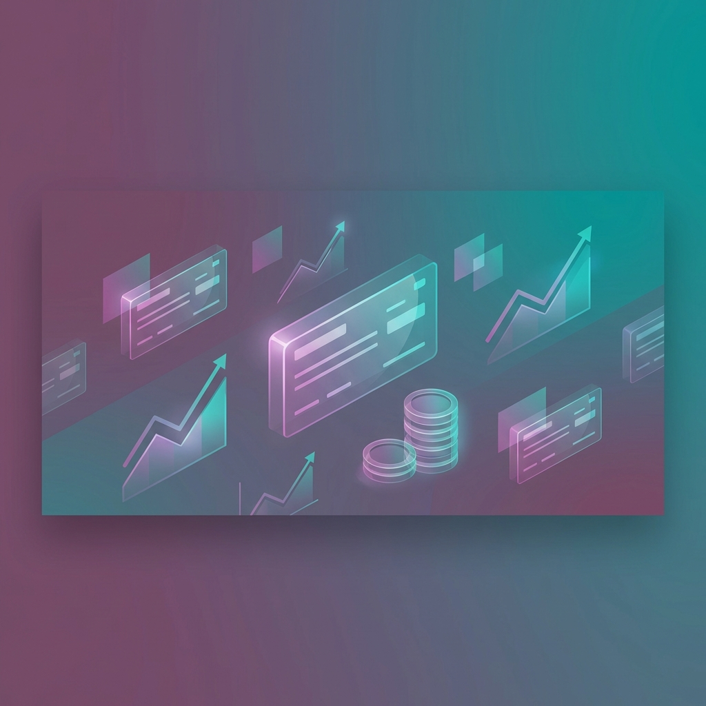
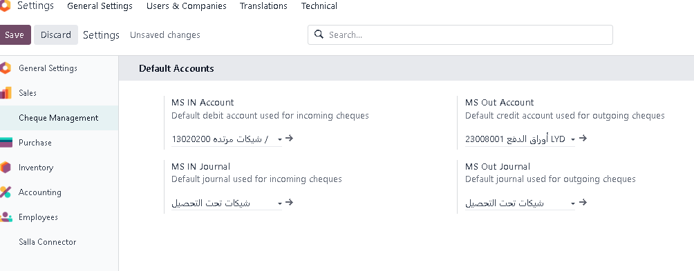
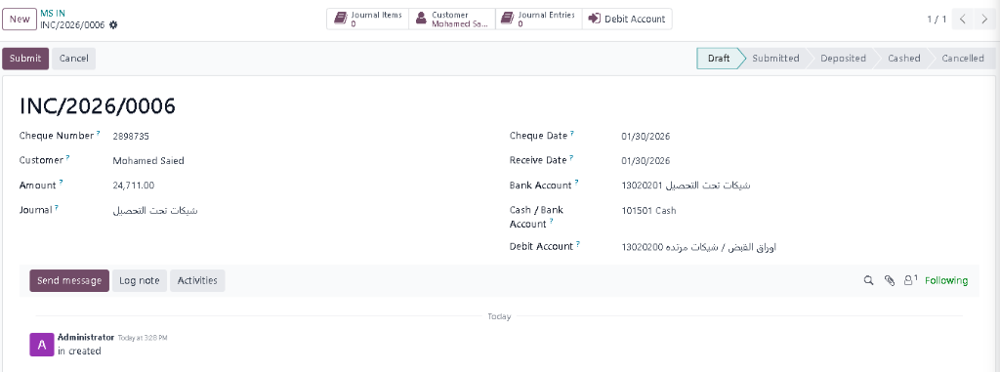
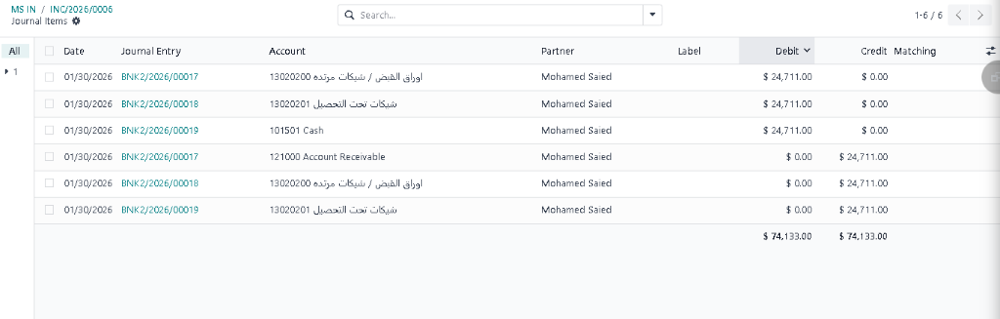

Experience the next level of bank cheque automation. Fully integrated, bilingual, and audit-ready.

Zero-manual entries for cheque lifecycle moves.
Scale across branches with unique sequences.
Submit state locks records for financial integrity.

Centralize your accounting flow. Map default journals and accounts for both income and expense cheques in one unified console.
قم بمركزة تدفقك المحاسبي. اربط دفاتر اليومية والحسابات الافتراضية لكل من الشيكات الصادرة والواردة في لوحة تحكم موحدة.

Track cheques through every state from Draft to Cashed. Smart validation prevents errors and ensures data locking after submission.
تتبع الشيكات عبر كل حالة من المسودة إلى التحصيل. تمنع التحققات الذكية الأخطاء وتضمن قفل البيانات بعد التقديم.

Direct visibility into ledger impacts. Every cheque is linked to professional journal entries via high-performance smart buttons.
رؤية مباشرة للتأثيرات المحاسبية. يرتبط كل شيك بقيود يومية احترافية عبر أزرار إحصائية ذكية وعالية الأداء.
Join hundreds of companies managing their finance with MS Cheque Management.
GET PROFESSIONAL SUPPORTنحن هنا لدعم نمو أعمالك بأفضل الحلول التقنية.